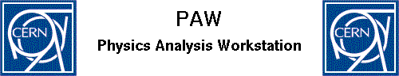
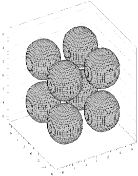
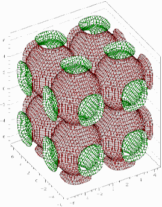

some published in March 1999 others in later issues
There has been a magnificent response to my request in the last newsletter for details of academic programs. There are 7 articles here, others have promised to send me their articles for the next issue. I will be happy to welcome further software articles from any academics who care to submit one, commercial vendors can take out an ad in the paper newsletter.
I have listed some large sources of academic programs on the first few pages,
including programs from HENSA, CERN and Daresbury. Then we have articles on:
(the numbers in () are the page number in the paper copy of the newsletter)
The Higher Education National Software Archive (HENSA) is on the World Wide Web,the part for micro computers is at http://micros.hensa.ac.uk with sections for PCs, Macs, Acorn, and even some for the old BBC-B micro. You can find versions of the popular protein display package RASMOL there as well as POVray, a public domain ray tracing package, with the additional utility POVChem, which can convert a protein in the Brookhaven data base format into input for POVray so that you can produce elegant shaded molecular structures to impress your grant giving authorities.
Another very useful package is PGPLOT a portable graphics package written in Fortran77 which runs on most main frames and micros. For details see the web site http://astro.caltech.edu/~tjp/pgplot/
Other people are beginning to see the benefits of using a portable graphics package as part of your own program.
The ISIS supported analysis software, GENIE, now uses PGPLOT
for its graphics.
Details are at
http://www.ISIS.rl.ac.uk/OpenGENIE/
ORNL, the originators of ORTEP, the thermal ellipsoid drawing
program, have added an interface to PGPLOT to simplify porting ORTEP across
to new computers.
Details are at
http://www.ornl.gov/ortep/ortep.html
D.S.Sivia has written a set of routines PGXTAL, for 3D plotting with PGPLOT,
PGXTAL can plot both crystallographic structures and density maps.
Details are at
http://www.isis.rl.ac.uk/dataanalysis/dsplot/
Please send details of any other useful software to BCA@ISISE.RL.AC.UK

PAW is part of the CERN program library CERNLIB. It is an instrument to assist physicists in the analysis and presentation of their data. It provides interactive graphical presentation and statistical or mathematical analysis, working on objects familiar to physicists like histograms, event files, ntuples, vectors, etc. Contact Paw.Support@Cern.Ch for detailed information. PAW is available free to physics departments of Institutes in CERN member states. It may be available to other departments, or commercial users can pay for an annual licence. There is a wealth of information about PAW on the World Wide Web. Start at URL http://wwwinfo.cern.ch/asd/paw/
You can find a tutorial giving instruction in all the basic functions and several levels of documentation including a comprehensive reference manual. PAW has a modular construction and contains many programs which can operate together. Many parts of it are written by users who contribute their software to the library. It is the only academic program I have found which can display 3 dimensional functions, such as those in the book 'The Mathematics of Structures' reviewed in the last issue on page 50. I think those plots were made by an expensive package. I have attempted to emulate them using PAW. Please send me news of any other academic package which can make such plots.
 
Emulation of Page 71 Fig 9a and Page 72 Fig10 in 'The Mathematics of Structures' (Reviewed in the Dec98 issue). These plots show on the left cubic packing of atoms with a constant of 3 and on the right with a constant of 4. Merely by changing the value of the constant you can begin to see the shapes of the surfaces between the atoms.
 Click here to return to BCA homepage
Click here to return to BCA homepage